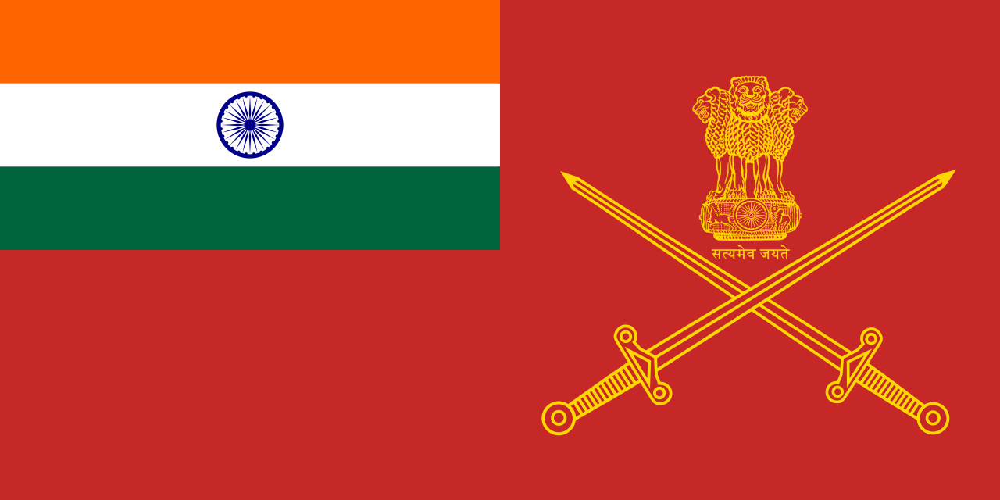
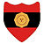
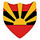
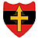
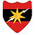
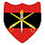

This article is about the Indian Army (since 1947). For the pre 1947 force, see British Indian Army. For others, see Military history of India.  The Indian Army is the land-based branch and the largest component of the Indian Armed Forces. The President of India is the Supreme Commander of the Indian Army and its professional head is the Chief of Army Staff (COAS), who is a four-star general. Two officers have been conferred with the rank of field marshal, a five-star rank, which is a ceremonial position of great honour. The Indian Army was formed in 1895 alongside the long established presidency armies of the East India Company, which too were absorbed into it in 1903. The princely states had their own armies, which were merged into the national army after independence. The units and regiments of the Indian Army have diverse histories and have participated in several battles and campaigns around the world, earning many battle and theatre honours before and after Independence.
The primary mission of the Indian Army is to ensure national security and national unity, to defend the nation from external aggression and internal threats, and to maintain peace and security within its borders. It conducts humanitarian rescue operations during natural calamities and other disturbances, such as Operation Surya Hope, and can also be requisitioned by the government to cope with internal threats. It is a major component of national power, alongside the Indian Navy and the Indian Air Force.[5] The army has been involved in four wars with neighbouring Pakistan and one with China. Other major operations undertaken by the army include Operation Vijay, Operation Meghdoot, and Operation Cactus. The army has conducted large peacetime exercises such as Operation Brasstacks and Exercise Shoorveer, and it has also been an active participant in numerous United Nations peacekeeping missions, including those in Cyprus, Lebanon, Congo, Angola, Cambodia, Vietnam, Namibia, El Salvador, Liberia, Mozambique, South Sudan, and Somalia.
The Indian Army is operationally and geographically divided into seven commands, with the basic field formation being a division. Below the division level are permanent regiments that are responsible for their own recruiting and training. The army is an all-volunteer force and comprises more than 80% of the country's active defence personnel. It is the largest standing army in the world with 1,237,117 active troops and 960,000 reserve troops.The army has embarked on an infantry modernisation program known as Futuristic Infantry Soldier As a System (F-INSAS), and is also upgrading and acquiring new assets for its armoured, artillery, and aviation branches.
The army operates six operational commands and one training command.Each command is headed by General Officer Commanding-in-Chief with the rank of Lieutenant General. Each command directly reports to Army HQ in New Delhi. These commands are given below in order of creation, with location (city) and commanders listed. There is also the Army Training Command abbreviated ARTRAC. Besides these, army officers may head tri-service commands such as the Strategic Forces Command and Andaman and Nicobar Command, as well as institutions such as the Integrated Defence Staff.
| Insignia | Name | Headquarters | Army Commander | Subordinate Unit(s) |
|---|---|---|---|---|
| Headquarters, Indian Army | New Delhi | 50th Independent Parachute Brigade – Agra | ||
|  | Central Command | Lucknow | Lieutenant General Yogendra Dimri | 6th Mountain Division – Bareilly |
|  | Eastern Command | Kolkata | Lieutenant General Rana Pratap Kalita |
|
|  | Northern Command | Udhampur | Lieutenant General Upendra Dwivedi |
|
| Southern Command | Pune | Lieutenant General JS Nain |
|
|
|  | South Western Command | Jaipur | LLieutenant General Amardeep Singh Bhinder |
|
| Western Command | Chandimandir | Lieutenant General Nav Kumar Khanduri |
|
|
|  | Army Training Command | Shimla | Lieutenant General Surinder Singh Mahal | Army Training Establishments |
| History | Indian independence | Indian Army Structure | List of serving generals of the Indian Army |